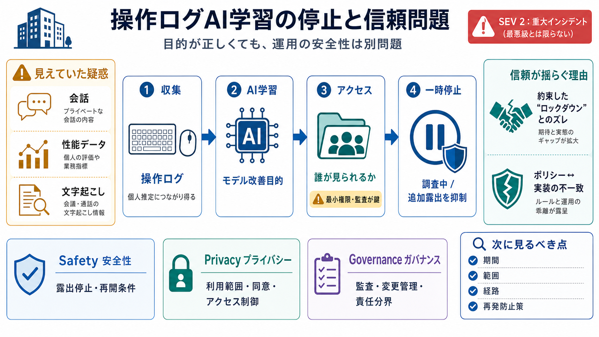

Meta pauses its Model Capability Initiative AI training program after ...
# Meta pauses its Model Capability Initiative AI training program after an internal leak exposed employee keystrokes and…

Metaは、従業員のキーストロークやマウス操作などの操作ログを使うAI学習プログラムを一時停止しました。漏えい疑惑と、プライバシー保護・アクセス制御への不信が焦点になっています。
AI学習のためのデータ活用（利用目的）でも、アクセス制御（権限）やプライバシー対策が弱いと、センシティブ情報が見え得ます。目的の正しさと、運用の安全性は別問題です。
報道ベースでは、プログラム関連データが社内の広い人々からアクセス可能だった可能性があります。見えていたとされるのは、プライベートな会話、パフォーマンスデータ、文字起こし（transcriptions）です。
Metaは、不適切アクセスの証拠はないとしつつ、調査のためにプログラムを止めると説明しています。証拠の有無に関わらず、アクセス可能状態だった場合は追加露出を抑える判断が合理的です。
記事では、重大度はSEV 2（0〜5の尺度で、0が最も重大）とされています。最悪級ではない可能性はあるものの、通常運用を脅かす“重大インシデント”として扱われています。
このAI学習は、Model Capability Initiative（MCI）として2026年4月に発表されたとされています。従業員のキーストロークやマウスの動きを学習データとして用い、MetaのAIモデル改善につなげる目的です。
現時点では「いつ・どの範囲・どの程度の期間」アクセス可能だったのか、経路（権限設計/設定ミス/バグ/内部ユーザーなど）が確定していません。原因の断定や再発可能性の評価には、追加情報が必要です。
記事は、直近でもAIチャットボットの脆弱性など別のインシデントが続いている点に触れています。単発なら説明できても、連続するなら監査、変更管理、インシデント対応の“プロセス品質”が疑われます。
本件は、技術的合理性が“安全性・プライバシー・運用ガバナンス”で反転し得る例です。特にアクセス制御（権限）と説明責任（透明性）が信頼に直結します。
読者としては「停止＝良い対応」で終わらず、調査結果の公開範囲、再発防止の具体策、従業員への透明性を注視する必要があります。特に“誰が・いつ・何を見た/見られ得たか”が鍵です。
以下は、この要約で言及されている出典・要素のカテゴリです（記事本文に依存）。詳細なURLや原文確認は各報道をご参照ください。
# Meta pauses its Model Capability Initiative AI training program after an internal leak exposed employee keystrokes and…
# Meta pauses employee-tracking program amid data exposure concerns. As reported by Tech Radar, Meta has temporarily hal…
## The Rundown's Post. ### **The Rundown**. Meta accidentally exposed employee keystroke data companywide while running …
[Try BI Games NEW](https://www.businessinsider.com/games). [](https://www.businessinsider.com/ "Business Insider"). [Bus…
A security breach in Meta's Model Capability Initiative, an AI training program that tracks staff keystrokes and mouse m…